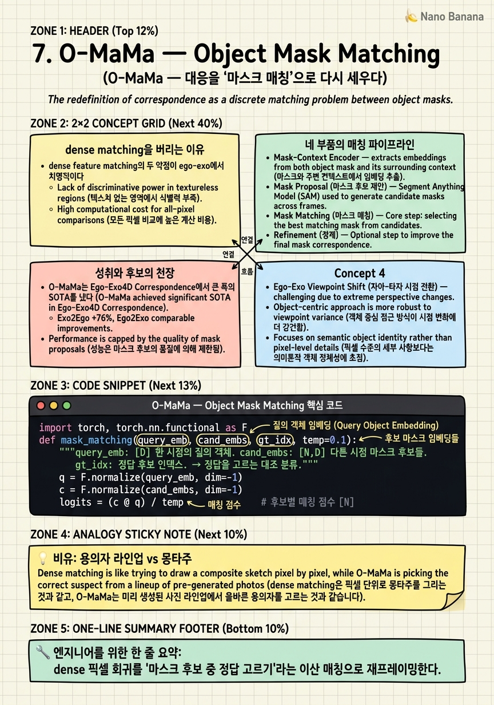

O-MaMa — Object Mask Matching
모래알 하나하나를 비교하는 대신, 먼저 모래성을 몇 개 쌓고 '어느 성이 맞는가'만 고른다면? 대응 문제가 갑자기 쉬워진다.

🎯 학습 목표
- dense feature matching과 mask matching의 차이를 안다
- 분할 후보를 먼저 만들고 매칭하는 재프레이밍의 이점을 이해한다
- DINOv2 + FastSAM 조합의 역할을 설명한다
- cross-attention과 하드 negative 마이닝의 기여를 안다
- 매칭 품질이 후보 품질에 묶이는 한계를 파악한다
6장 ObjectRelator가 객체 대응을 세그멘테이션으로 세웠다면, O-MaMa(ICCV 2025)는 그 대응을 푸는 방식을 뒤집는다.
전통적 cross-view 대응은 dense feature matching — 한 시점의 모든 픽셀 특징을 다른 시점의 모든 픽셀과 비교 — 이다. 계산이 무겁고, 시점이 급변하면 픽셀 특징이 안 맞아 매칭이 흔들린다.
O-MaMa의 재프레이밍은 명료하다. 픽셀을 하나하나 비교하지 말고, 먼저 객체 마스크 후보를 만든 뒤 '어느 마스크가 정답인가'만 고르자. 문제가 dense 픽셀 매칭에서 이산적 mask matching으로 바뀐다 — 수만 픽셀 비교가 수십 마스크 중 선택으로 축소된다.
파이프라인은 네 부품이다. (1) Mask-Context Encoder: FastSAM으로 마스크 후보를 만들고 DINOv2 특징을 마스크 위로 풀링, (2) Ego↔Exo Cross-Attention: 두 시점 관찰을 융합, (3) Mask-Matching 대조 손실: 정답 마스크를 공유 공간에서 정렬, (4) Hard Negative Adjacent Mining: 헷갈리는 인접 마스크를 하드 negative로. Ego-Exo4D 대응에서 큰 폭 SOTA(Exo2Ego IoU +76%)를 냈다.
핵심 내용
dense matching을 버리는 이유
dense feature matching의 두 약점이 ego-exo에서 치명적이다.
첫째, 연산이다. \(H\times W\) 픽셀을 다른 시점 \(H\times W\)와 비교하면 \(O((HW)^2)\)다. 고해상에서 폭발한다.
둘째, 강건성이다. ego-exo는 시점이 급변해 같은 객체의 픽셀 특징조차 크게 달라진다. 픽셀 단위로 비교하면 이 변동에 그대로 노출돼 매칭이 부서진다.
O-MaMa의 통찰은 "대응의 단위는 픽셀이 아니라 객체"라는 것이다. 우리가 원하는 답은 "저 컵"이지 "저 픽셀 (i,j)"가 아니다. 그렇다면 애초에 객체 단위 후보(마스크)를 만들고 그중에서 고르면 된다. 이산적 선택은 연산이 가볍고, 마스크 수준 특징은 픽셀 잡음을 평균 내어 시점 변동에 강하다.
이것은 문제를 쉽게 만드는 재프레이밍의 전형이다 — 어려운 회귀(dense 대응)를 쉬운 분류(마스크 선택)로 바꾼다.

네 부품의 매칭 파이프라인
Mask-Context Encoder. FastSAM이 각 시점에서 객체 마스크 후보들을 빠르게 생성한다. 그리고 자기지도 백본 DINOv2의 특징을 각 마스크 영역 위로 풀링해, 마스크마다 하나의 문맥 임베딩을 만든다. FastSAM이 '후보를 만들고', DINOv2가 '각 후보를 시점 강건하게 기술한다'.
Ego↔Exo Cross-Attention. ego 마스크 임베딩과 exo 마스크 임베딩이 서로를 참조한다. 한 시점만 보면 애매한 객체도, 상대 시점 정보를 융합하면 정체가 또렷해진다. 두 시점의 관찰을 한 표현으로 엮는 단계다.
Mask-Matching 대조 손실. 정답 ego-exo 마스크 쌍은 공유 공간에서 가깝게, 오답 쌍은 멀게 정렬한다. 6장 XObjAlign이 '같은 객체를 가깝게'였다면, 여기서는 '후보들 중 정답을 골라내는' 대조로 목적이 더 날카롭다.
Hard Negative Adjacent Mining. 가장 헷갈리는 negative는 인접한·유사한 마스크다(옆에 놓인 비슷한 컵). 이런 하드 negative를 집중 채굴해 학습하면, 미세하게 다른 객체를 구분하는 능력이 생긴다. AE2의 역순 negative(3장)와 같은 철학 — 어려운 negative가 정밀도를 만든다.

성취와 후보의 천장
O-MaMa는 Ego-Exo4D Correspondence에서 큰 폭의 SOTA를 냈다(Exo2Ego +76%, Ego2Exo +22% IoU). 재프레이밍 하나가 성능을 도약시킨 사례다. dense 회귀를 마스크 분류로 바꾸니 연산은 가벼워지고 강건성은 올라갔다.
핵심 교훈은 "대응의 단위를 픽셀에서 객체로 올리면 문제가 쉬워진다"이다. 이는 6~8장 correspondence 계열을 관통하는 원리다. ObjectRelator가 객체를 정렬했고, O-MaMa가 객체를 매칭했다.
그러나 이 접근의 천장은 이름에 이미 있다. 매칭은 후보 마스크 안에서만 정답을 고른다. 만약 FastSAM이 정답 객체를 애초에 마스크로 만들지 못했다면(놓쳤거나 잘못 쪼갰다면), 매칭은 존재하지 않는 정답을 고를 수 없다. 매칭 품질의 상한은 후보 품질이다.
이 의존성이 다음 두 방향을 낳는다. 8장 CCMP는 매칭을 cycle-consistency로 자기검증해 후보 없이도 대응을 정련하고, 10장 언저리의 V2-SAM류는 SAM2를 대응에 직접 적응시켜 후보 생성 자체를 강화한다. O-MaMa는 재프레이밍의 힘과 그 대가(후보 의존)를 동시에 보여준 이정표다.
💡 비유로 이해하기
범인을 찾는 두 방법이 있다. 하나는 목격자에게 얼굴의 모든 픽셀을 기억에서 재구성하게 하는 것(dense matching) — 힘들고 부정확하다. 다른 하나는 용의자 몇 명을 세워두고 "이 중 누구?"라고 묻는 것(mask matching) — 훨씬 쉽고 정확하다.
O-MaMa는 후자다. FastSAM이 라인업(마스크 후보)을 세우고, DINOv2가 각 용의자의 인상착의를 시점에 강건하게 기록한다. cross-attention은 두 목격자(ego·exo)가 서로 정보를 교환해 확신을 높이는 것이고, 하드 negative 마이닝은 "쌍둥이처럼 닮은 용의자"를 일부러 세워 미세한 차이를 구분하도록 훈련하는 것이다.
이 방식의 결정적 약점도 라인업에 있다 — 진범이 라인업에 없으면 아무리 잘 골라도 틀린다. FastSAM이 정답 객체를 놓치면 매칭은 실패한다. 그래서 다음 수사관들은 라인업 자체를 검증하거나(cycle-consistency) 더 잘 세우는(SAM2 적응) 쪽으로 간다.
💻 코드 예시
O-MaMa의 핵심 — 마스크 후보들 중 대조로 정답을 고르고 인접 하드 negative를 강조 — 를 보자.
import torch, torch.nn.functional as F
def mask_matching(query_emb, cand_embs, gt_idx, temp=0.1):
"""query_emb: [D] 한 시점의 질의 객체. cand_embs: [N,D] 다른 시점 마스크 후보들.
gt_idx: 정답 후보 인덱스. → 정답을 고르는 대조 분류."""
q = F.normalize(query_emb, dim=-1)
c = F.normalize(cand_embs, dim=-1)
logits = (c @ q) / temp # 후보별 매칭 점수 [N]
# hard negative: 정답과 가장 헷갈리는 인접 후보에 가중
with torch.no_grad():
hard = logits.clone(); hard[gt_idx] = -1e9
w = torch.ones_like(logits); w[hard.argmax()] = 2.0 # 최난 negative 강조
return F.cross_entropy((logits*w).unsqueeze(0), torch.tensor([gt_idx]))
q = torch.randn(128); cands = torch.randn(12,128); cands[3]=q+0.1*torch.randn(128)
print("mask-matching loss:", mask_matching(q, cands, gt_idx=3).item())mask_matching은 대응을 분류로 푼다 — 질의 객체 임베딩 q에 대해 후보 마스크들 cands 중 정답(gt_idx)을 고른다. dense 픽셀 회귀가 이산 선택으로 바뀐 게 재프레이밍의 핵심이다. hard 부분이 하드 negative 마이닝 — 정답과 가장 헷갈리는 인접 후보에 가중치를 줘 미세 구분력을 키운다. cands가 FastSAM 후보, q/cands 임베딩이 DINOv2 기반이라는 게 전제다. 단, 정답이 cands에 없으면 이 게임은 이길 수 없다 — 후보 의존이 천장이다.
🏭 현업에서의 평가
✅ 시니어가 보는 것
- dense 회귀를 이산 매칭으로 바꾸는 재프레이밍의 이점(연산·강건성)을 설명하는가
- FastSAM(후보)·DINOv2(기술)·cross-attention(융합)의 역할을 구분하는가
- 후보 품질이 매칭 상한이라는 의존성을 인지하는가
⚠️ 레드 플래그
- 여전히 dense 픽셀 매칭이 정석이라 고집
- 마스크 후보가 정답을 놓칠 수 있음을 간과
- 하드 negative 없이도 미세 객체 구분이 된다고 가정
🎤 예상 인터뷰 질문 (클릭하면 모범답안)
dense feature matching 대신 mask matching으로 바꾸면 무엇이 좋아지나?
연산이 \(O((HW)^2)\) 픽셀 비교에서 수십 개 마스크 중 이산 선택으로 축소되고, 마스크 수준 특징이 픽셀 잡음을 평균 내어 급격한 ego-exo 시점 변동에 강건해진다. 어려운 dense 회귀가 쉬운 분류가 된다 — 원하는 답이 애초에 '픽셀'이 아니라 '객체'이므로 단위를 올리는 게 자연스럽다.
파이프라인에서 FastSAM과 DINOv2는 각각 무슨 역할인가?
FastSAM은 각 시점에서 객체 마스크 후보를 빠르게 생성(라인업 세우기). DINOv2는 자기지도 백본으로 각 마스크 영역 특징을 풀링해 시점 강건한 마스크 임베딩을 만든다(각 후보 기술). 이후 cross-attention이 두 시점을 융합하고 대조 손실이 정답을 고른다.
이 접근의 성능 상한은 무엇이 결정하나?
후보 마스크 품질이다. 매칭은 후보 안에서만 정답을 고르므로, FastSAM이 정답 객체를 놓치거나 잘못 쪼개면 매칭이 존재하지 않는 정답을 고를 수 없다. 그래서 후속 연구는 cycle-consistency로 자기검증(CCMP)하거나 SAM2를 대응에 직접 적응(V2-SAM)해 후보 자체를 강화한다.
✨ 핵심 요약
대응=매칭 게임
dense 픽셀 회귀를 '마스크 후보 중 정답 고르기'라는 이산 매칭으로 재프레이밍한다.
단위를 픽셀→객체
원하는 답이 '객체'이므로 후보를 객체 단위로 만들면 연산은 가볍고 강건성은 오른다.
FastSAM+DINOv2
FastSAM이 마스크 후보를, DINOv2가 시점 강건한 마스크 임베딩을 만든다.
Cross-Attention 융합
두 시점 관찰을 서로 참조해 애매한 객체의 정체를 또렷하게 만든다.
하드 negative
인접·유사 마스크를 집중 채굴해 미세하게 다른 객체를 구분하는 힘을 기른다.
큰 폭 SOTA
Ego-Exo4D 대응에서 Exo2Ego IoU +76% — 재프레이밍이 성능을 도약시켰다.
후보가 천장
매칭은 후보 안에서만 고른다 — 정답을 놓친 후보는 이길 수 없다. CCMP·V2-SAM의 출발.
- Mur-Labadia et al. (2025). O-MaMa: Learning Object Mask Matching between Egocentric and Exocentric Views. ICCV 2025. arXiv:2506.06026